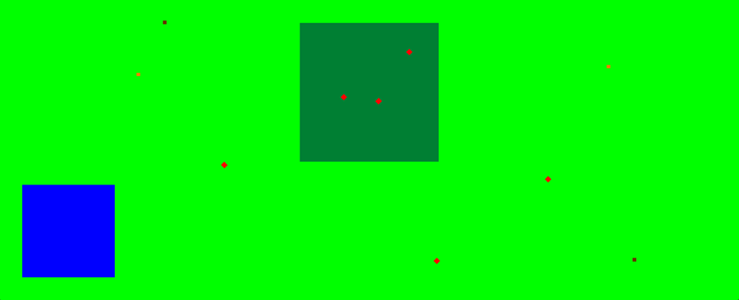
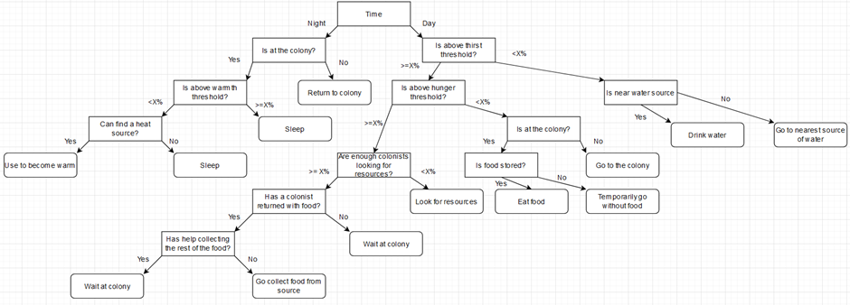

Final Year Project - Managing a Colony with AI Using Decision Trees
A simple colony simulation created using C++ and DirectX 11 with the colonists being directed by a decision tree. The decision tree that was used assigned roles to each of the colonists based on the colony's current situation.
The colonists have multiple needs: food, water and warmth. Without these the colonists would die so they are sent out to collect food and heat sources (orange and brown squares respectively). Collecting these resources is split into two roles, the first of which goes out looking for resources and informs the colony when it finds one. The other role waits at the colony until it has been informed and then starts collected the resource that has been found. All colonists can drink water at the water source which is represented by the blue square.
Colonists can reproduce if they have been alive for a certain amount of time and if their "Maslow" value is high enough. This value is based of Maslow's Hierarchy of needs which produces a value based on their current hunger, thirst, warmth and safety values.
The decision tree for this project was made by hand and only covers some of the basic apsects of managing a colony. The end nodes at the bottom of the tree represent roles/actions that the colonist would be instructed to do. A steady-state genetic algorithm was incorporated into the decision tree, represented by nodes with an X percentage, in order to find out what threholds for certain decisions resulted in the best outcome for the colony.
The video above shows a colony using the decision tree with one of the genetic algorithm's first chromosomes.